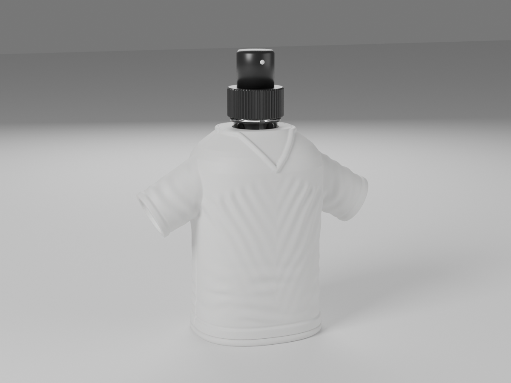
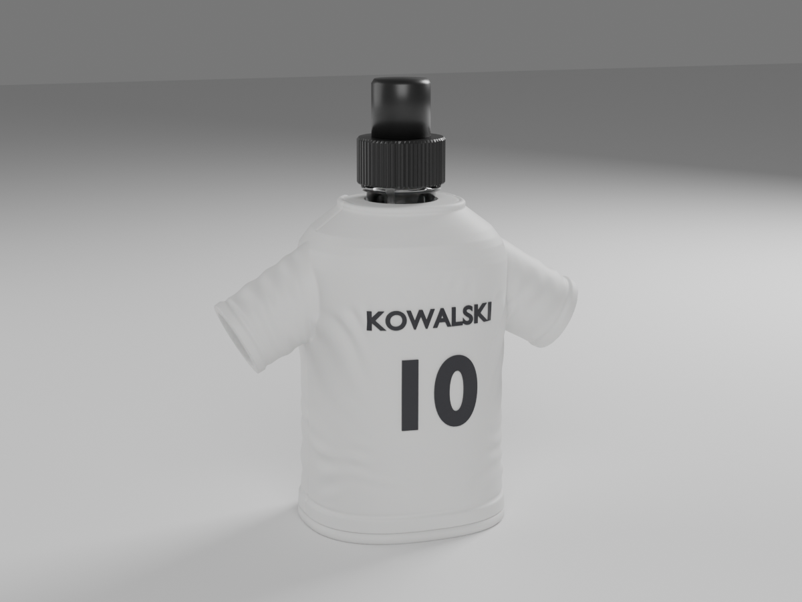
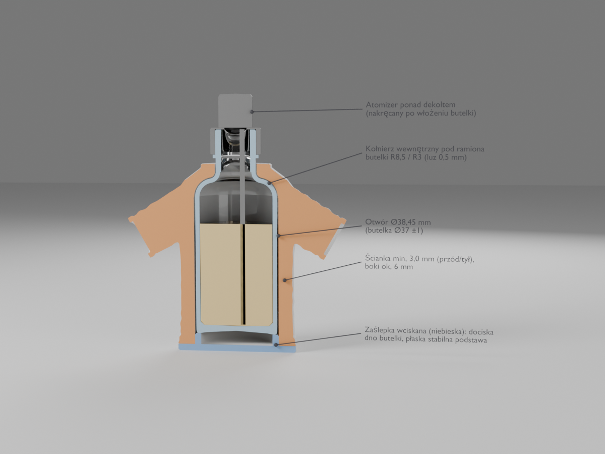

Etui w kształcie koszulki na butelkę 50 ml – koncept 3D
Wstępna wizualizacja konstrukcji pod druk SLA. Szkic – fałdy i kształt koszulki zostaną dopracowane w finalnym modelu.



Wstępna wizualizacja konstrukcji pod druk SLA. Szkic – fałdy i kształt koszulki zostaną dopracowane w finalnym modelu.


